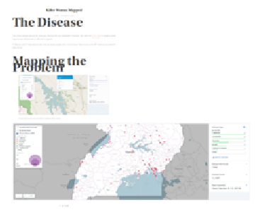

Killer Worms Mapped

Killer Worms Mapped
The Disease
Two million people around the world are infected with soil transmitted helminths. We used the GAHI data to create a pretty map of areas affected and unaffected in Uganda.S. Mansoni and S. Haematobium are what we would usually refer to as bilharzia. Take a look at the GIF below to see what the map can do.
Mapping the Problem
Click here...This gif shows how the map can be filtered to display the data of interest.